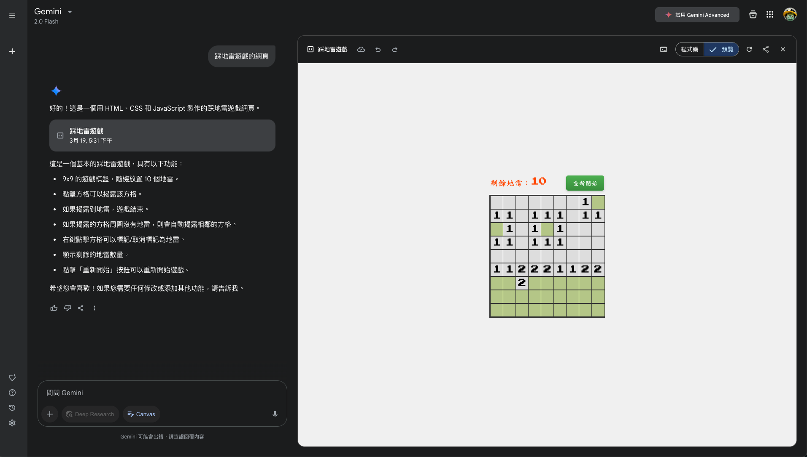

Canvas
與 Gemini 共同編輯文件和程式碼的互動空間
即時協作
程式碼預覽
音訊總覽
將文件轉換為播客式討論，隨時隨地學習
AI 主持人
可下載

Gemini 新功能一覽
graph TB
A[Gemini 新功能] --> B[Canvas]
A --> C[音訊總覽]
B --> D[文件協作]
B --> E[程式碼開發]
C --> F[文件轉播客]
C --> G[行動學習]
style A fill:#6366f1,stroke:#4f46e5,color:white
style B fill:#818cf8,stroke:#6366f1,color:white
style C fill:#f472b6,stroke:#db2777,color:white
Canvas 互動空間
專為創作與協作設計的全新體驗
文件協作流程
flowchart TD
A[選擇 Canvas 選項] -->|點擊| B[開始撰寫內容]
B -->|輸入| C[即時查看變更]
C -->|分析| D[使用智慧回饋]
D -->|調整| E[調整語氣/格式]
E -->|完成| F[匯出至 Google 文件]
style A fill:#c7d2fe,stroke:#6366f1,color:black
style B fill:#e0e7ff,stroke:#6366f1,color:black
style C fill:#e0e7ff,stroke:#6366f1,color:black
style D fill:#e0e7ff,stroke:#6366f1,color:black
style E fill:#e0e7ff,stroke:#6366f1,color:black
style F fill:#c7d2fe,stroke:#6366f1,color:black
程式開發工作流程
flowchart TD
A[提出程式需求] -->|描述| B[生成程式碼]
B -->|執行| C[即時預覽結果]
C -->|反饋| D[要求調整功能]
D -->|優化| E[優化程式碼]
E -->|分享| F[匯出至 Colab 或分享]
style A fill:#dbeafe,stroke:#3b82f6,color:black
style B fill:#eff6ff,stroke:#3b82f6,color:black
style C fill:#eff6ff,stroke:#3b82f6,color:black
style D fill:#eff6ff,stroke:#3b82f6,color:black
style E fill:#eff6ff,stroke:#3b82f6,color:black
style F fill:#dbeafe,stroke:#3b82f6,color:black
開始
完成
網路應用
Python 腳本
互動式遊戲
模擬程式
Canvas 使用步驟
選擇 Canvas
1
描述需求
2
即時協作
3
完成作品
4
音訊總覽功能
將文件轉換為播客式討論
音訊總覽工作原理
graph TD
A[上傳文件] -->|分析| B[AI 分析內容]
B -->|生成| C[生成對話腳本]
C -->|合成| D[AI 主持人對談]
D -->|輸出| E[產生音訊檔案]
E -->|分享| F[下載或分享]
style A fill:#fce7f3,stroke:#db2777,color:black
style B fill:#fbcfe8,stroke:#db2777,color:black
style C fill:#fbcfe8,stroke:#db2777,color:black
style D fill:#fbcfe8,stroke:#db2777,color:black
style E fill:#fbcfe8,stroke:#db2777,color:black
style F fill:#fce7f3,stroke:#db2777,color:black
文件轉換進度
文件分析
100%
腳本生成
100%
音訊合成
100%

音訊總覽示例
上傳文件
點擊建議
收聽內容
下載分享
音訊特性
英文支持
可下載
多語言
功能比較
| 功能 | Canvas | 音訊總覽 |
|---|---|---|
| 主要用途 | 文件與程式碼協作 | 將文件轉為音訊 |
| 適用場景 | 創作、編程、設計 | 學習、通勤、多工處理 |
| 關鍵特色 | 即時編輯、預覽 | AI 主持人、深入討論 |
| 支援語言 | 所有 Gemini 支援語言 | 目前僅英文 |
| 可用性 | 全球推出 | 全球推出 |
功能發布時間軸
2025年3月19日
Gemini 推出 Canvas 功能
2025年3月19日
Gemini 推出音訊總覽功能
2025年4月
更多語言支持即將推出
使用 Gemini 新功能的效益
提升效率
傳統方式
使用 Gemini
激發創意
傳統方式
使用 Gemini
多工處理
傳統方式
使用 Gemini
從文字到視覺化的轉變
傳統文字文件
Canvas 是 Gemini 的新功能，允許用戶創建互動式文件和程式碼。使用 Canvas，您可以：
- 即時編輯和預覽內容
- 獲得 AI 提供的智慧回饋
- 調整語氣和格式
- 一鍵匯出至 Google 文件
使用步驟包括：
- 選擇 Canvas 選項
- 開始撰寫內容
- 即時查看變更
- 使用智慧回饋
- 調整語氣/格式
- 匯出至 Google 文件
Canvas 適用於各種場景，包括網路應用、Python 腳本、互動式遊戲和模擬程式等。
視覺化呈現
flowchart TD
A[選擇 Canvas 選項] --> B[開始撰寫內容]
B --> C[即時查看變更]
C --> D[使用智慧回饋]
D --> E[調整語氣/格式]
E --> F[匯出至 Google 文件]
style A fill:#c7d2fe,stroke:#6366f1
style F fill:#c7d2fe,stroke:#6366f1
網路應用
Python 腳本
互動式遊戲
模擬程式
視覺化效益
70%
提升理解速度
65%
提升記憶保留
80%
提升使用者滿意度